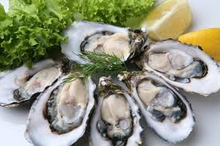

海蛎子的营养价值

科学家研究发现，牡蛎肉精粉有抗癌及抑制药物ADM副作用的效果。
当牡蛎肉进入人体后，能使人体细胞内的谷胱甘肽增加2倍。
谷胱甘肽能迅速消除致癌的重要因子活性氧，进而起抗癌作用。
这一重大发现有助于提高癌症病人使用抗癌药治疗的效果。
牡蛎肉含蛋白质、脂肪、肝糖，还含有多种维生素及牛磺酸和钙、磷、铁、锌等营养成分，是健肤美容和防治疾病的珍贵食物。
下面向您介绍牡蛎的常见做法:
中式做法

材料
新鲜的海蛎肉16个，鸡蛋一个，面粉适量，泡打粉少许。
做法
1、海蛎肉用清水抓洗干净，沥干水分。
2、加盐和料酒腌制10分钟。
3、鸡蛋加面粉和少量泡打粉搅成糊状。
4、起油锅，宽油，油6成热左右，逐个取腌好的海蛎肉沾干面粉然后裹上鸡蛋糊下入油锅中火炸制。
5、翻动，炸至淡黄色捞出控油。
6、油烧至滚热，重新下入海蛎子二次炸制。
7、炸至表面金黄，捞出控油。
8、蘸椒盐食之。
小诀窍
1、裹好面糊的海蛎子要逐个下锅，下锅后注意翻动，以免粘连。
2、第一次下锅要用中火慢炸，第二次下锅要急火快炸。
3、二次炸制一是为逼出过多的油脂，二是可以增加香酥的口感。如嫌麻烦，也可一次炸至金黄。
4、不喜欢泡打粉的可以省略，也可以用海蛎子肉直接沾干面粉炸制。

材料
鲜牡蛎12粒，大米200g，紫米50g，白砂糖2茶匙（10g），盐1/2茶匙（3g）， 芝麻香油1茶匙（5g），油1茶匙（5ml），香菜碎1/2茶匙（3g），大葱1段，鲜姜2片，水800ml
做法
将大米和紫米洗净，放入水（800ml）中浸泡10分钟。大葱段和鲜姜片切成细丝，待用。 鲜牡蛎洗净，沥干水分。用白砂糖（1茶匙）、盐和油拌匀，腌制10分钟。 将泡过的大米和紫米，连同切好的姜丝，一起倒入飞利浦HD4723电饭煲中煮制20分钟。 待粥煮好时放入鲜牡蛎和剩余的白砂糖搅匀，再次煮开。撒上芝麻香油、香菜碎和大葱丝即可。
小诀窍
鲜姜一可以去除海鲜的腥味，二可以大大提高粥的鲜度。
材料
用料牡蛎肉200克，豆腐200克，白菜200克，植物油、葱、姜、精盐、胡椒面、味精各适量。
做法
1、将牡蛎肉洗净，放盘。
2、将豆腐洗净，切块。
3、将白菜切成片，葱、姜切丝。
4、将植物油放锅内烧热，放葱、姜煸炒片刻，放豆腐稍煎，加水800毫升，投入白菜、牡蛎炖至白菜熟烂，加胡椒面、味精、精盐调匀即可食用。
功效
清热散血，滋阴养血，美颜，降脂瘦身。